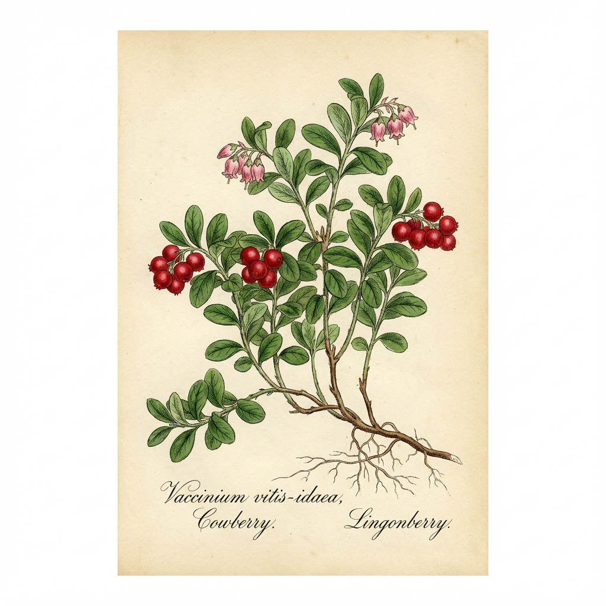

🔴'">
1. Lingon (Preiselbeere)
Vaccinium vitis-idaea
🗣️ Lokale Namen: Lingon (SE), Tyttebær (NO), Puolukka (FI)
📍 Fundorte
In ganz Skandinavien! Nadelwälder, Heiden, bis zur Baumgrenze.
💊 Heilwirkung
- Antibakteriell - Wie Cranberry, bei Blasenentzündung
- Vitamin C - Wichtig im dunklen Winter
- Konservierend - Hält ohne Zucker!
📋 Anwendung
Lingonsylt: Zu schwedischen Köttbullar unverzichtbar!
Rårörda Lingon: Roh gerührt, mit Zucker.
Saft: Lingondricka - erfrischend.